20 distinct clips; three structures per clip.
Clockwise node order represents time. Gray edges join adjacent segments. Blue edges join similar segments; green edges are a random control matched to the number of blue edges. All structures keep the temporal chain and are checked for connectivity and finite features.
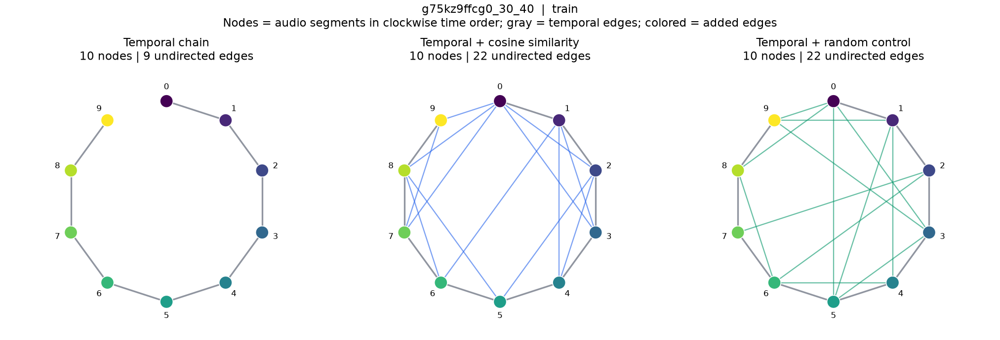
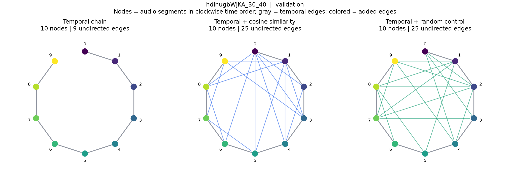
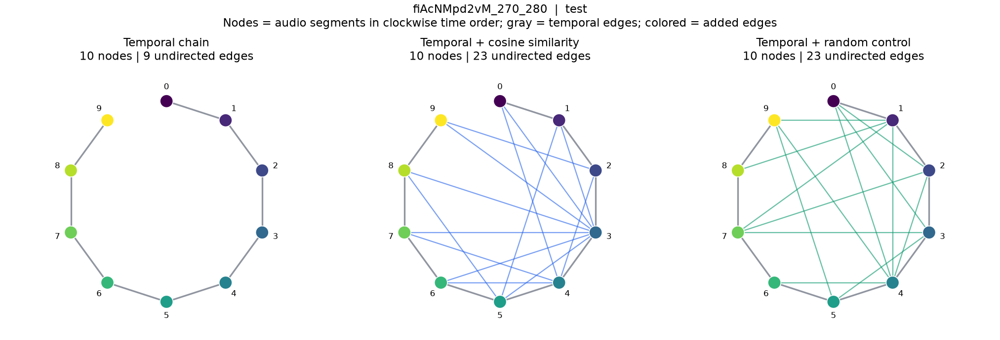
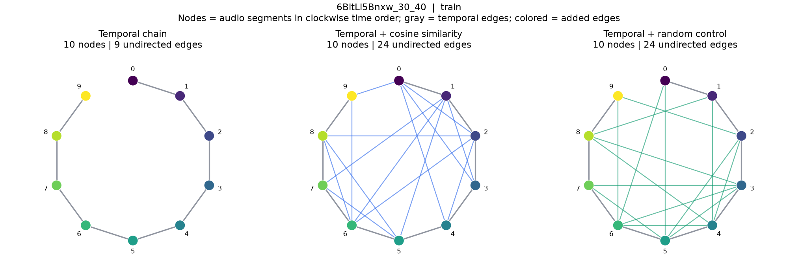
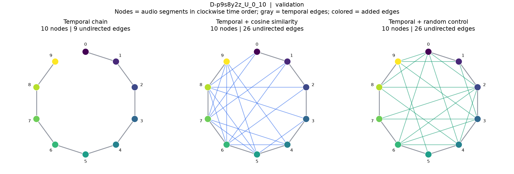
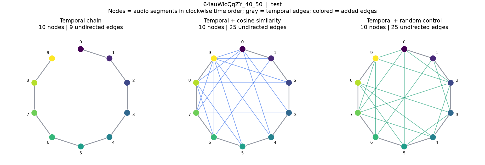
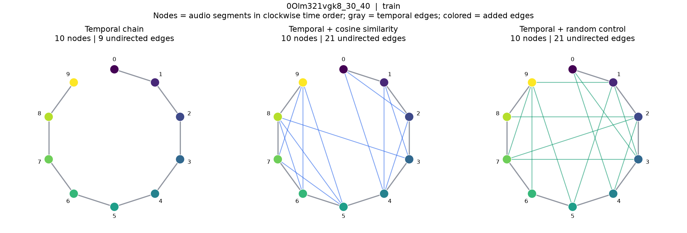
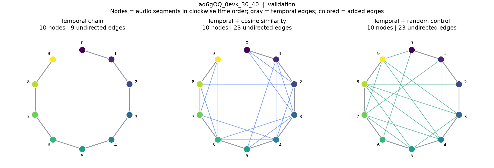
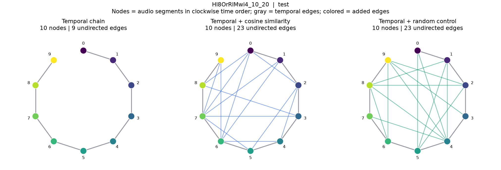
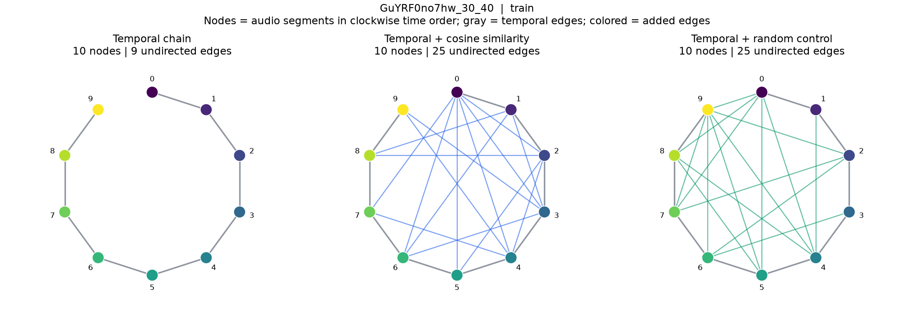
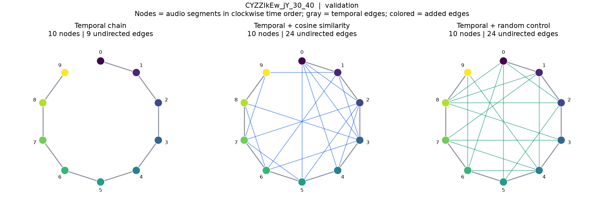
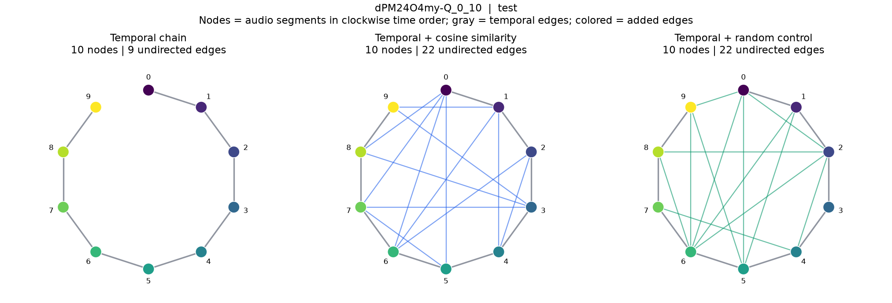
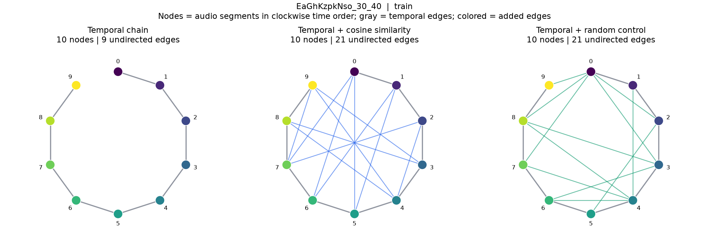
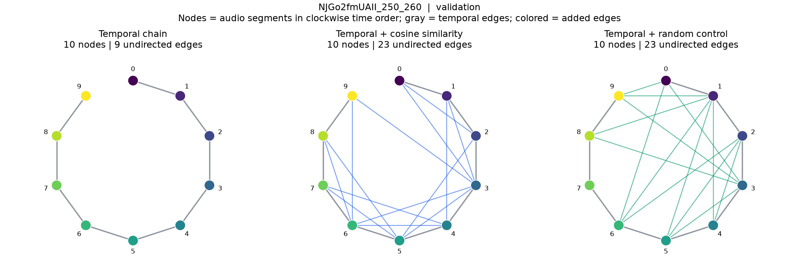
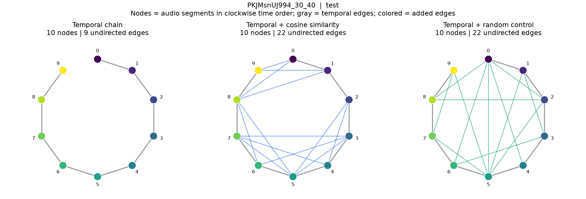
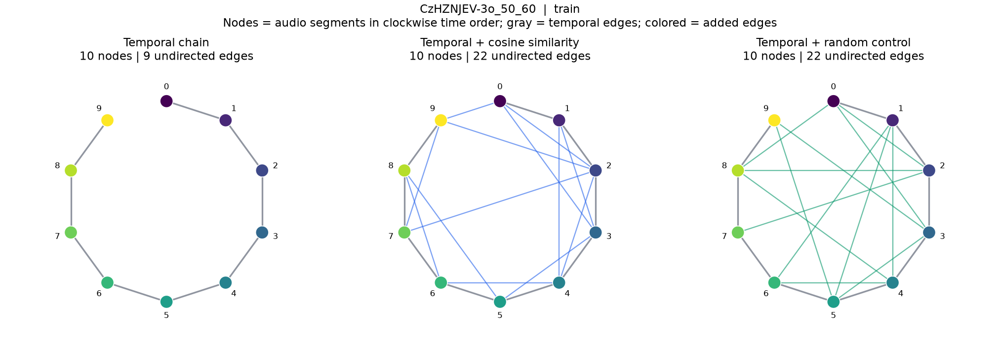
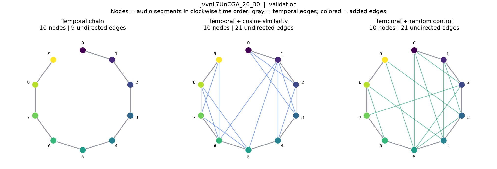
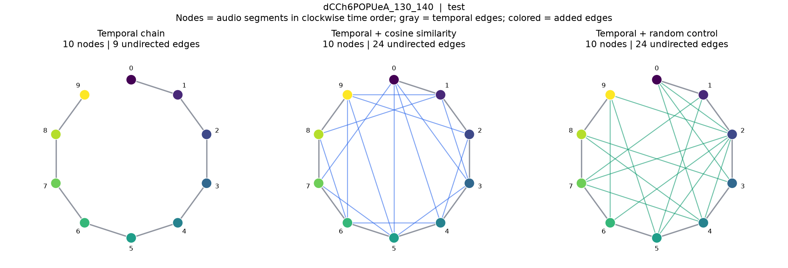
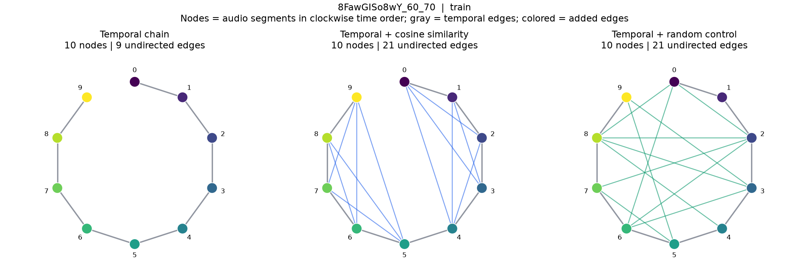
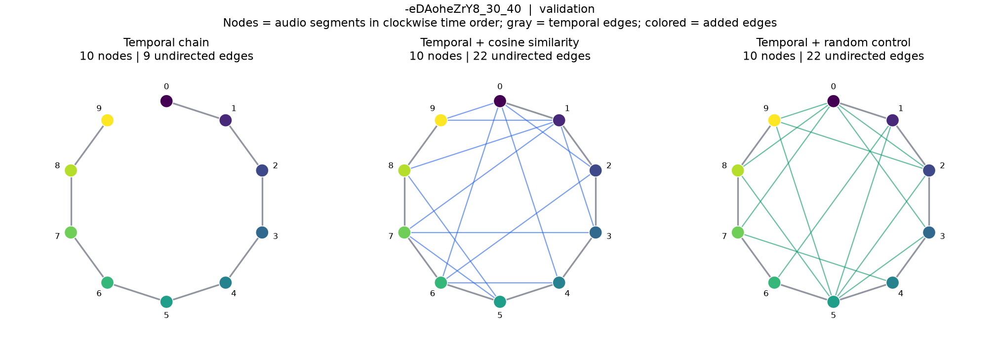